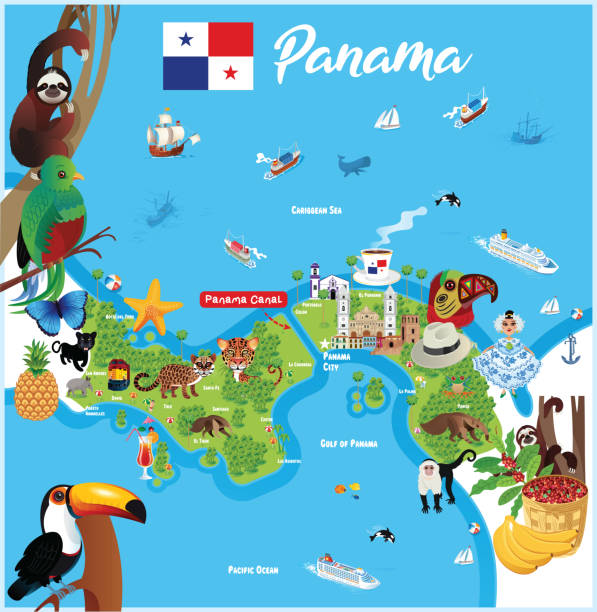

UNIVERSIDAD TECNOLÓGICA DE PANAMÁ
FACULTAD DE CIENCIAS Y TECNOLOGÍA
DEPARTAMENTO DE CIENCIAS SOCIALES Y HUMANÍSTICAS
PORTAFOLIO - Tamara Vega
Lic. Desarrollo y Gestión de Software | 1GS114

¡Hola! Este es mi portafolio
📄 Descargar Programa de Geografía de Panamá
📘 Descargar PORTAFOLIOTAMARA
Mis Proyectos
🛠️ Talleres
📂 Taller 1 -¿LAS GEOGRAFÍAS O LA GEOGRAFÍA?
📂 Taller 2 -DIVISIÓN POLÍTICO-ADMINISTRATIVO DE PANAMÁ
📂 Taller 3 -Grupos Humanos
▶️ Taller 4 - Video áreas protegidas
📑 Parciales
📄Parcial 1 - SECTOR SECUNDARIO: DESARROLLO ECONÓMICO Y SU DISTRIBUCIÓN GEOGRÁFICA
📄 Parcial 1 - Resumen del Parcial 1